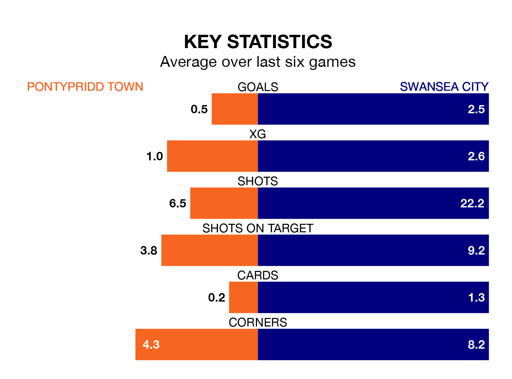

Relegation candidates Pontypridd Town face a challenge against high-flying Swansea City on Sunday.
Pontypridd Town are rooted to the bottom of the Welsh Premier Women's League table, and have picked up no wins and one draw in their 10 games to date.
The Swans, meanwhile, are second in the standings with 22 points, having won seven and drawn one, and are six points behind table-toppers Cardiff City.
Pontypridd are in terrible form in Welsh Premier Women's League, with no wins and a draw from their last six games.
With five wins and one loss over that period, Swansea's form is much better – they have taken 15 points from 18, compared to Town's one.
With five goals in 10 games so far this season, the home side are the league's lowest scorers with 0.5 goals per game. And they are conceding more than average, letting in 25 goals at a rate of 2.5 per game.
City, meanwhile, are above average scorers, with 2.5 goals per game, compared to a league average of 1.9. They have conceded 1.0 goal per game.
In the last five years, Pontypridd and Swansea have played each other on five occasions. Swansea won all of them.
On average, Pontypridd scored 0.2 goals and the Swans 2.6 in those matches.
Their last meeting was on October 8, when Swansea won 3-1 at home.
Pontypridd's last match was on January 14, a 1-1 draw against Aberystwyth Town.
Swansea beat Cardiff Metropolitan 3-0 last time out, also on January 14.
Updated: 14:53 (UTC), 16/01/24